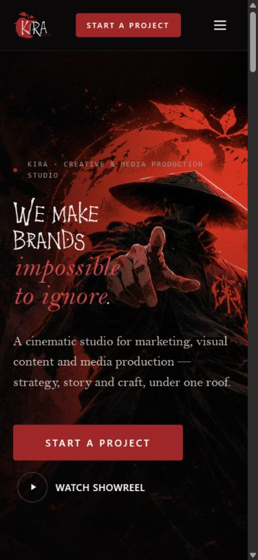
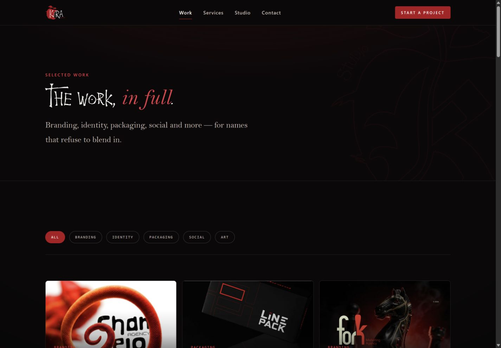

Cinematic first impression
A bold hero composition establishes the creative studio’s visual direction.
Websites
A cinematic website for a creative and media production studio.
A dramatic visual identity connects selected work, studio services and project enquiries across a multi-page experience.
HTML5 / CSS3 / JavaScript / GSAP / ScrollTrigger
A bold hero composition establishes the creative studio’s visual direction.
Separate work, project, service, studio and contact pages form the visitor journey.
GSAP and ScrollTrigger support transitions and scroll-driven reveals.


